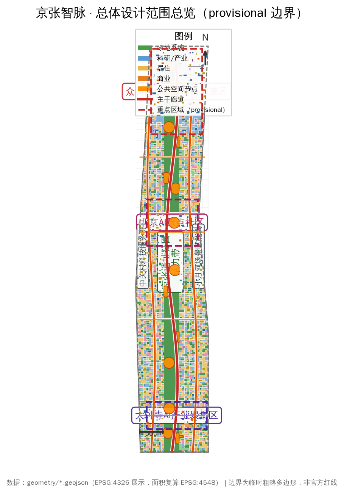
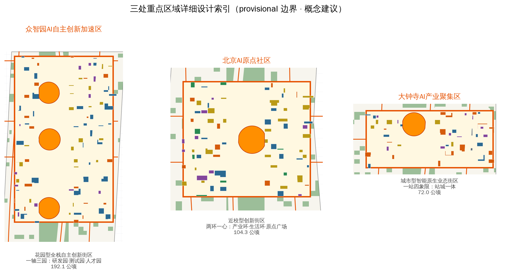
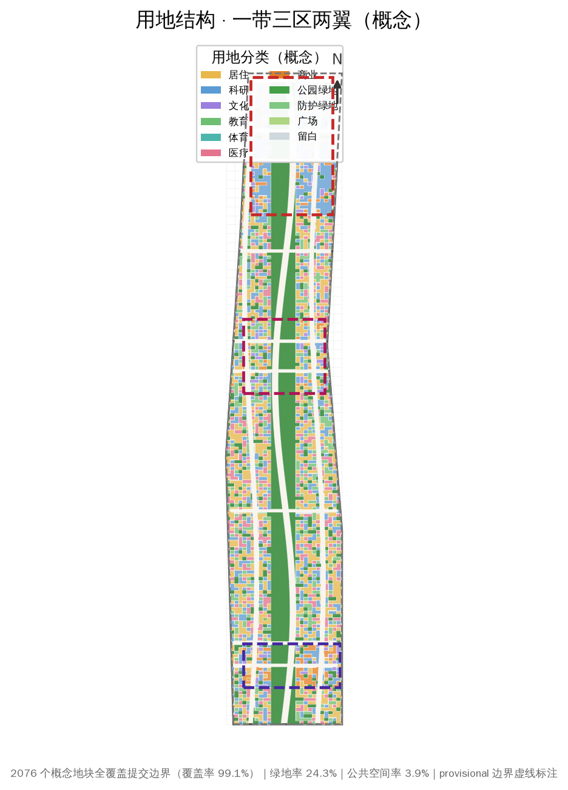
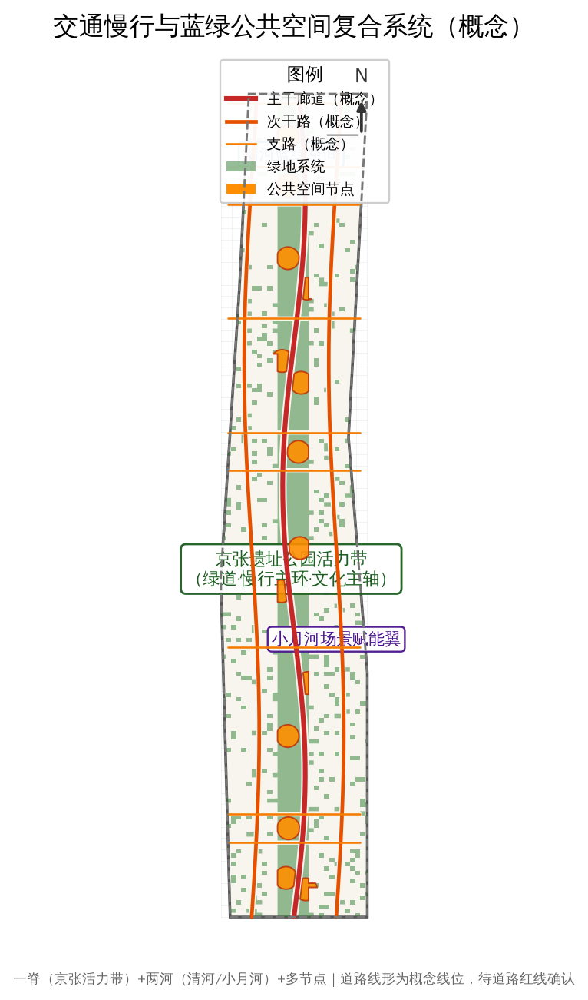

metrics.json；面积复算坐标系 CGCS2000 / 3°GK CM 117E（EPSG:4548），展示坐标系 EPSG:4326。| 层级 | 边界（官方文字四至） | 公告面积 | 设计深度 |
|---|---|---|---|
| 统筹研究范围 | 北至北五环 · 东至京藏高速 · 南至西直门外大街 · 西至万泉河路 | 43.6 km² | 战略研究 + 结构规划 |
| 总体设计范围 | 京张遗址公园周边 1–2km 城市地区和产业区 | 11.4 km² | 控规深度城市设计 |
| 重点区域范围 | 众智园 / 北京AI原点社区 / 大钟寺三区（自北向南） | 368.4 公顷 | 规划综合实施方案深度 |

| 重点区域 | 面积（公告） | 定位（概念） | 空间结构 |
|---|---|---|---|
| 众智园AI自主创新加速区 | 192.1 公顷 | 花园型全栈自主创新街区 | 一轴三园：研发园·测试园·人才园 |
| 北京AI原点社区 | 104.3 公顷 | 近校型创新街区（高校-孵化-产业） | 两环一心：产业环·生活环·原点广场 |
| 大钟寺AI产业聚集区 | 72.0 公顷 | 城市型智能原生业态街区 | 一站四象限：站城一体 |


道路骨架为概念线位（12 条中心线，三横多纵），待道路红线确认；轨道站点一体化聚焦三重点区「站-城-产」衔接；慢行主环沿京张遗址公园活力带与清河/小月河组织。
760 处概念建筑基底（约 986,425 sqm），覆盖 AI 研发、实验室、孵化器、办公、混合功能、教育科研、居住、人才公寓、社区服务、商业、文化、交通接驳与现状保留等类型。拆改留按「保留 / 改造 / 新建」三分类，均为概念建议，地块级结论待现状普查与权属确认。
| 分期 | 代表项目（概念） | 依赖条件 |
|---|---|---|
| 近期 | 活力带样板段、站前广场、试点孵化器 | 现状底数、权属、专项规划 |
| 中期 | 测试验证园、成果转化中心、人才公寓 | 控规条件、招商落地 |
| 长期 | 站城一体综合体、国际活动设施 | 轨道工程、投资测算 |
geometry/phasing.geojson（近/中/长三期交错）。所有拆改留、招商、资金、政策与活动安排均为概念建议，不构成已确定政府安排。| # | 场景卡 | 类型 | 空间落位 | 隐私边界/人工复核 |
|---|---|---|---|---|
| S-01 | 智能体服务亭（政务/商务） | 城市服务 | 大钟寺站前广场 | 匿名化；人工复核投诉通道 |
| S-02 | AI+消费体验街区 | 智能原生业态 | 大钟寺四象限 | 不采集个人身份；人工巡检 |
| S-03 | AI+交通信号协同 | 城市运行 | 总体范围干道节点 | 不追踪个体；人工调控预案 |
| S-04 | AI大模型安全评测场 | 测试验证 | 众智园测试验证园 | 合规数据沙箱；专家复核 |
| S-05 | 具身智能机器人测试场 | 测试验证 | 众智园测试验证园 | 封闭场地；人工安全监督 |
| S-06 | AI+医疗影像测试床 | 测试验证 | 众智园/医疗科研机构 | 严格隐私保护；临床专家复核 |
| S-07 | AI+教育实验街区 | 公共服务 | 原点社区 | 未成年人保护；教师把关 |
| S-08 | 开发者共创空间 | 创新社区 | 原点社区 | 公开代码；不采集个人隐私 |
| S-09 | AI+科研加速平台 | 创新服务 | 原点社区 | 研究数据授权管理；人工审核 |
| S-10 | 京张智脉公共体验径 | 公共体验 | 京张遗址公园活力带 | 不采集个人轨迹；人工导览 |
compliance_matrix.json（23+ 项）、standard_matrix.json（6 项）、design_depth_matrix.json（15 项）。| # | 画像 | 需求特征 | 空间-运营映射 |
|---|---|---|---|
| P-01 | AI 工程师/创业者 | 算力、资本、交流、测试、生活配套 | 三区产业空间+加速器+人才公寓 |
| P-02 | 高校师生/科研人员 | 成果转化、实验室、跨校交流 | 原点社区孵化器+原点广场 |
| P-03 | 企业/产业从业者 | 商务办公、会展、产业服务 | 大钟寺商务象限+科技服务翼 |
| P-04 | 周边居民/家庭 | 绿地、教育、医疗、AI生活体验 | 社区服务设施+活力带 |
| P-05 | 全球开发者/游客 | 朝圣体验、国际活动、AI体验 | 朝圣地标+活动体系+体验径 |
「百年筑路 → 自主造芯 → 自主模型」：京张铁路是中国自主修建的第一条干线铁路，承载自主创新精神原点；中关村是中国创新文化与科技体制改革的策源地；AI 新文化以开源、共创、智能体文明为特征。三者在京张智脉上合流为「京张智脉」叙事，通过遗址公园活力带、朝圣地标、导视系统与国际传播（JZ·AI 品牌 + AI 周）落地。本叙事为文化概念建议，不歪曲历史事实，不使用未授权肖像/商标/版权材料。
sources.json 与 data/source_registry.json；本页未引用任何 background-only 或未知来源支撑空间结论。| 检查项 | 状态 |
|---|---|
| 确定性校验（deterministic validation） | PASS |
| 空间审查（spatial review） | PASS（3 项 provisional 提示为正当披露） |
| 视觉打包检查（visual packaging） | PASS |
| 专业证据审查（professional evidence） | PASS |
| 可进入正式评审 | YES |
self_check.json；本页为离线静态 HTML，不加载任何 CDN、远程瓦片、外部脚本、外部字体、iframe、表单或 API。